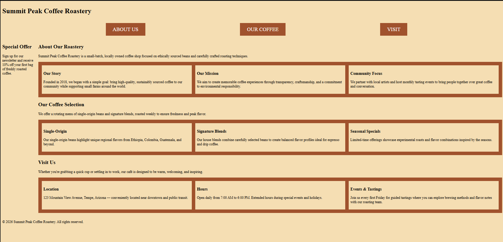
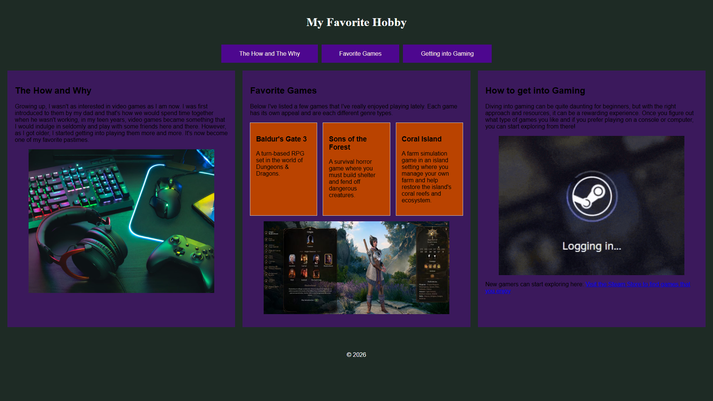
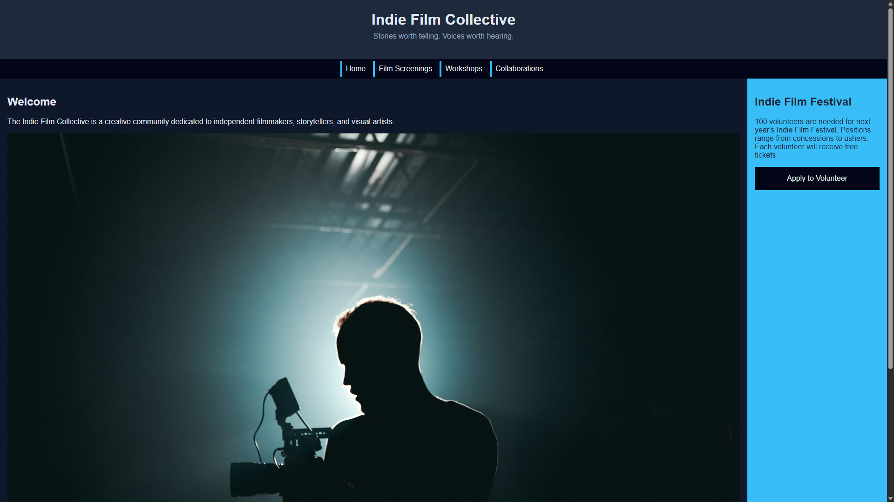

Code-Along 3
This assignment helped me further understand and apply CSS Grid and Flexbox concepts.

Build 4
This project was completed to demonstrate the combination of semantic HTML and Flexbox/Grid systems and implementing a mobile-first CSS strategy and use media queries to create a more professional looking webpage.

Build 5
This project allowed me to demonstrate my ability to create a professional multi-page website by going beyond a single web page by organizing files, and connecting pages.
